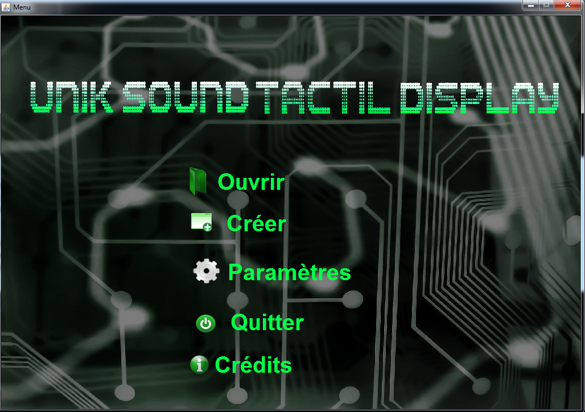
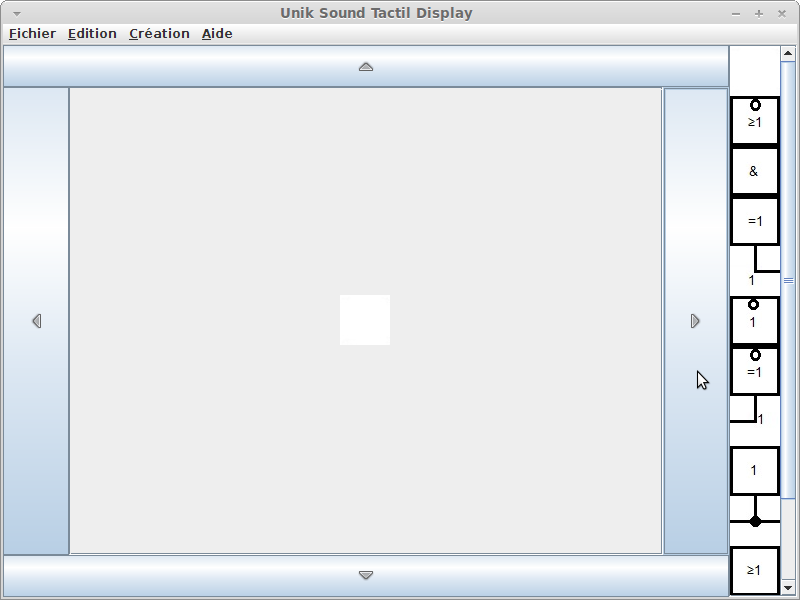
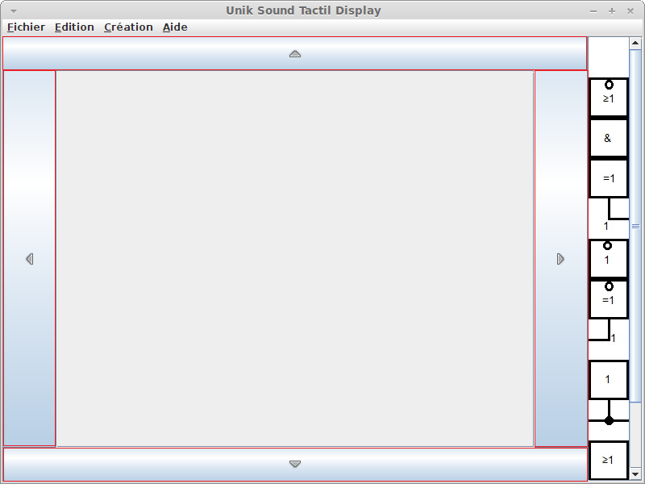
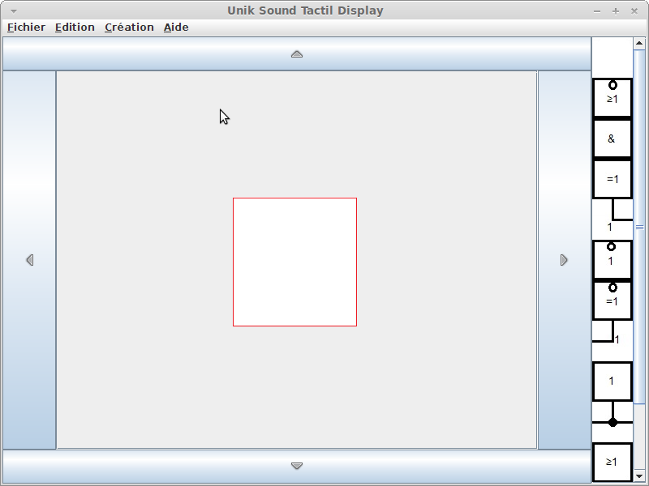
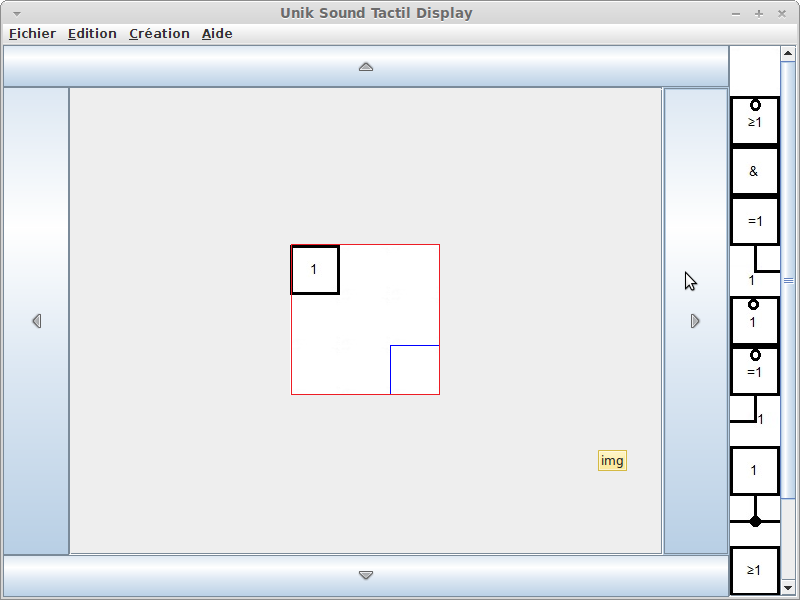

Ouvrir/Créer
Créer un nouveau circuit :
- Dans le menu, cliquez sur le deuxième bouton de la liste,
le bouton Créer

-Cliquez ensuite sur l'onglet Fichier dans la barre d'outil et
sélectionnez le deuxième élément, Nouveau ( raccourci Control-N )

-Cliquez sur l'une des barres se trouvant de chaque coté de l'interface
( encadré en rouge dans l'image ci-dessous ), pour créer l'emplacement où
l'élément logique sera déplacé.


- Sélectionnez dans un premier temps l'élément logique, à
déposer dans le circuit, disponible dans la boite d'outils à
gauche de l'écran

- L'élément se placera de manière automatique dans la zone
que vous aurez sélectionné. L'écran principal est représenté
comme une grille quadrillée, du coup, l'élément viendra se poser
dans une des cases de ladite grille.
Sauvegarder le circuit :
- Cliquez sur l'onglet Fichier de la barre d'outil puis sur
enregistrer sous
-Sélectionnez ensuite l'emplacement ou le fichier sera enregistré,
entrez son nom et cliquez sur Save en bas de l'interface
Ouvrir un circuit :
- Cliquez sur l'onglet Fichier de la barre d'outil puis sur
Ouvrir (Ctrl-O)
- Choisissez l'emplacement du fichier à ouvrir puis cliquez
sur Open
Créé avec HelpNDoc Personal Edition: Générateur de documentation et EPub gratuit